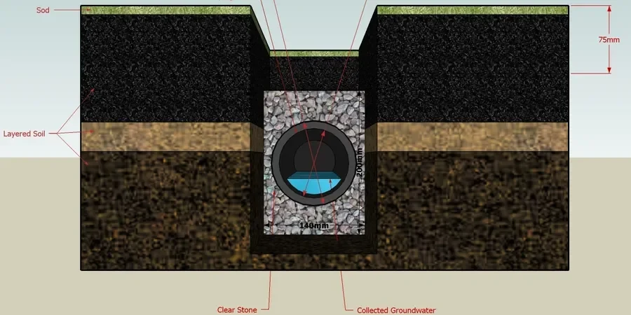

En Santiago, las lluvias invernales concentradas y la geografía de la cuenca generan escorrentías que saturan los suelos de fundación vial. La normativa chilena, como la NCh 1508 (drenaje de caminos), exige sistemas de drenaje profundo y superficial para preservar la estructura del pavimento. Por eso, el drenaje vial geotécnico en Santiago no es opcional. Diseñar subdrenes, zanjas drenantes y geodrenes requiere entender la permeabilidad del terreno, algo que evaluamos con ensayos de laboratorio y terreno. Un mal manejo del agua subterránea provoca pérdida de soporte en la subrasante. Complementamos este análisis con un estudio de mecánica de suelos para caracterizar capas y con pavimento flexible para verificar espesores de carpeta.

Un mal drenaje puede reducir la vida útil de una carretera a la mitad. En Santiago, el agua es el enemigo silencioso del pavimento.
Metodología y alcance
- Prospección con calicatas para medir nivel freático.
- Ensayos de permeabilidad (Lefranc o carga variable).
- Diseño de filtros granulares según gradación del suelo.
- Instalación de geotextiles no tejidos para separación y filtro.
Consideraciones locales
Imagina una autopista en la salida sur de Santiago. Durante un invierno normal, el agua se infiltra por la junta del pavimento y satura la base granular. Sin drenaje lateral, la subrasante arcillosa se expande y pierde resistencia. Aparecen baches y grietas longitudinales. Lo vimos en la Ruta 5 cerca de San Bernardo. La solución fue instalar drenes de zanja con tubería ranurada y geotextil. El costo de reparar un kilómetro de calzada dañada por mal drenaje es hasta 4 veces mayor que instalar el sistema desde cero. El drenaje vial geotécnico en Santiago previene ese desgaste prematuro.
¿Necesita una evaluación geotécnica?
Respuesta en menos de 24h.
WhatsApp directo: +56 9 7709 2993La forma más rápida de cotizar
Email: contacto@geotecnia1.biz
Normativa aplicable
NCh 1508 (Drenaje de caminos), NCh 2369 (Diseño sísmico de estructuras e instalaciones industriales), NCh 165 (Permeabilidad de geotextiles)
Servicios técnicos asociados
Diagnóstico y diseño de drenaje vial
Incluye prospección geotécnica, ensayos de permeabilidad in situ, modelación hidrológica e hidráulica, y planos de drenaje superficial y subterráneo. Entregamos informe con recomendaciones de material filtrante y geosintéticos.
Supervisión e instalación de sistemas drenantes
Asistencia técnica en obra para asegurar la correcta colocación de geotextiles, tuberías y rellenos granulares. Verificamos pendientes, juntas y compactación de la zanja. El objetivo es garantizar la funcionalidad del sistema durante toda la vida del pavimento.
Parámetros típicos
Preguntas frecuentes
¿Qué normativa rige el drenaje vial en Chile?
La norma principal es la NCh 1508, que establece criterios de drenaje para caminos urbanos e interurbanos. También aplican la NCh 2369 para obras sismorresistentes y las NCh 165 y D4751 para geotextiles. En Santiago, además, los municipios exigen planes de manejo de aguas lluvia.
¿Cuánto cuesta un estudio de drenaje vial geotécnico en Santiago?
El rango referencial para un estudio completo varía entre $346.000 y $1.262.000, dependiendo del número de calicatas, ensayos de permeabilidad y la extensión lineal del tramo vial. Incluye informe técnico con planos.
¿Qué diferencia hay entre drenaje superficial y subterráneo?
El drenaje superficial capta el agua de lluvia que escurre por la calzada y las bermas mediante cunetas y sumideros. El subterráneo, en cambio, controla el nivel freático y el agua que se infiltra a través de subdrenes y zanjas drenantes. Ambos son necesarios para proteger la estructura del pavimento en Santiago.
¿Cuándo es obligatorio instalar drenaje en una vía?
Es obligatorio cuando el nivel freático está a menos de 1,5 m de la subrasante, cuando el suelo tiene baja permeabilidad (arcillas expansivas) o cuando la pendiente natural del terreno favorece la acumulación de agua. La NCh 1508 lo exige para vías con tránsito medio y alto.
¿Qué tipo de geotextil se recomienda para drenaje vial?
Se recomienda un geotextil no tejido punzonado por agujas, con gramajes entre 200 y 400 g/m², que cumpla con la NCh 165 (tamaño de abertura aparente). Debe permitir el paso del agua sin que el suelo fino migre hacia el dren. En Santiago, los suelos limo-arcillosos requieren geotextiles con abertura controlada.